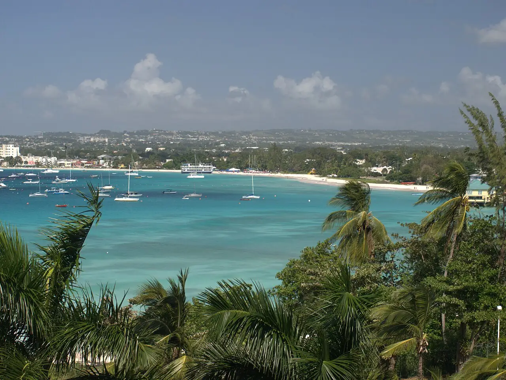

Carlisle Bay
Bridgetown, Barbade · snorkeling, plongée, baignade

Baie abritée au bord de Bridgetown, aménagée en parc marin. Plusieurs épaves peu profondes y reposent non loin de la plage et se découvrent en snorkeling comme en plongée.
- Lieu
- Bridgetown, Barbade
- Niveau
- Débutant
- Activités
- snorkeling, plongée, baignade
- Type d'eau
- Mer / océan
- Coordonnées
- 13.09, -59.62 (position approximative du secteur)
Dangers à connaître
- Bateaux et jet-skis nombreux dans la baie : nage bien visible.
- Épaves : ne pénètre pas à l’intérieur sans formation.
Le conseil d'Ocean Buddy
Passe par un opérateur de la plage pour rejoindre les épaves : la baie sert aussi de mouillage aux bateaux.
Ouvrir dans Ocean Buddy Télécharger sur l'App Store
Source : Fiche Ocean Buddy · septembre 2026 · à vérifier localement.